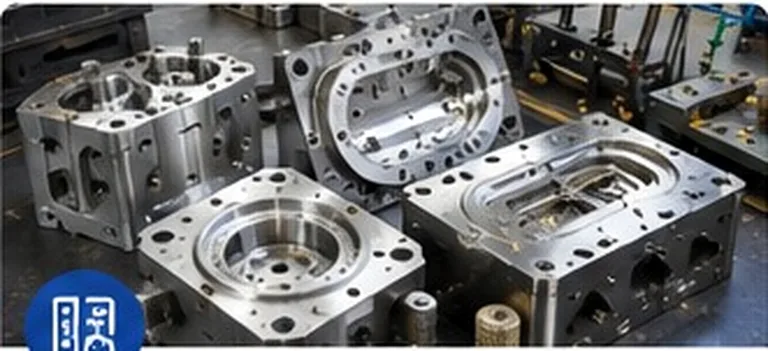
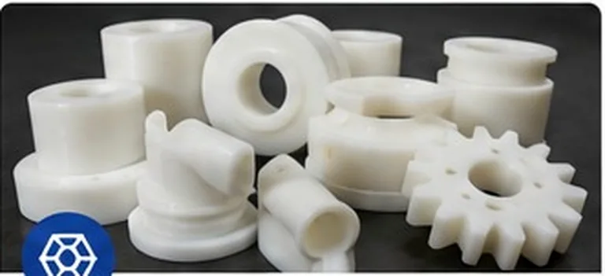
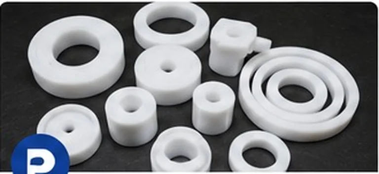
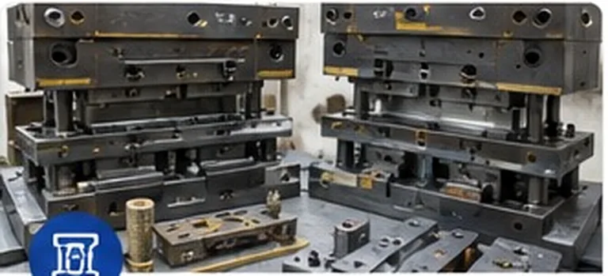

01Rubber Moulds
Rubber moulds · Nylon tooling · PTFE tooling · Sheet-metal dies




Precision tooling and production-focused engineering for rubber, nylon, PTFE and sheet metal components.
Focused tooling categories for industrial component manufacturers, using the existing project scope and content.

Compression, transfer, injection and custom rubber component moulds.
View Details →
Tooling for bushes, washers, spacers, rollers, gears, guides and seals.
View Details →
Tooling for seals, rings, bushes, washers, gaskets and related components.
View Details →
Press tools, progressive and compound dies for cutting, bending and forming.
View Details →
Shree Menakshi Tool & Die Makers specializes in the design and manufacturing of precision tools, dies, moulds and production tooling for rubber, nylon, PTFE and sheet metal components.
The approach is centered on understanding the component, selecting an appropriate tooling concept and developing a practical solution around production requirements.
Discover Our Approach →Production tooling covering rubber moulds, engineering-plastic tooling, PTFE tooling and sheet metal dies.
Precision machining is considered within the tool manufacturing workflow to produce accurate tool components and assemblies.
Component study, feasibility, tool concept, detailed drawings, assembly, trial and correction form a structured development process.
Existing project content covers elastomers, engineering plastics, PTFE and sheet materials, with tooling considerations based on material characteristics, geometry, shrinkage and production requirements.
View Materials →Share your component details and production requirement with Shree Menakshi Tool & Die Makers.